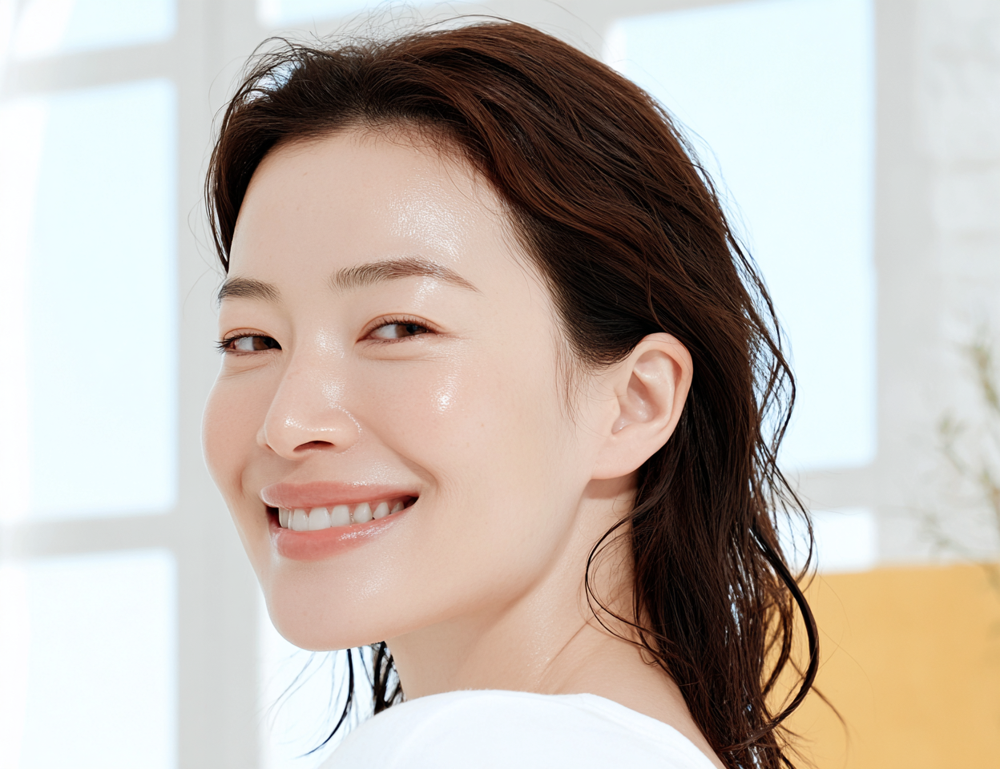
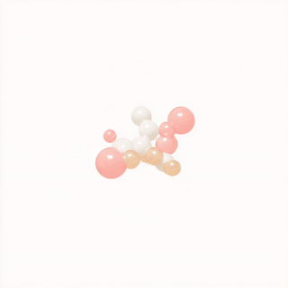
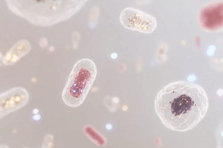
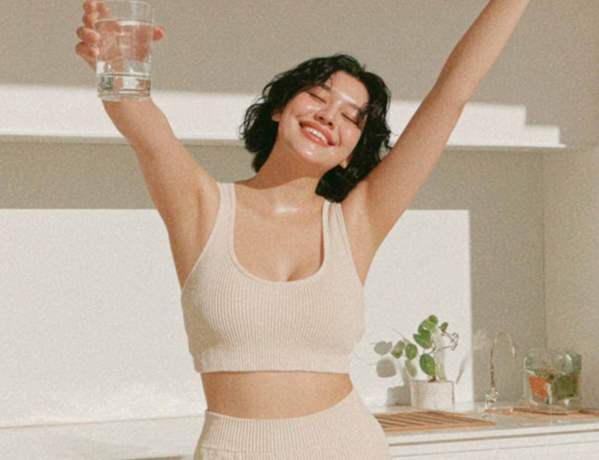
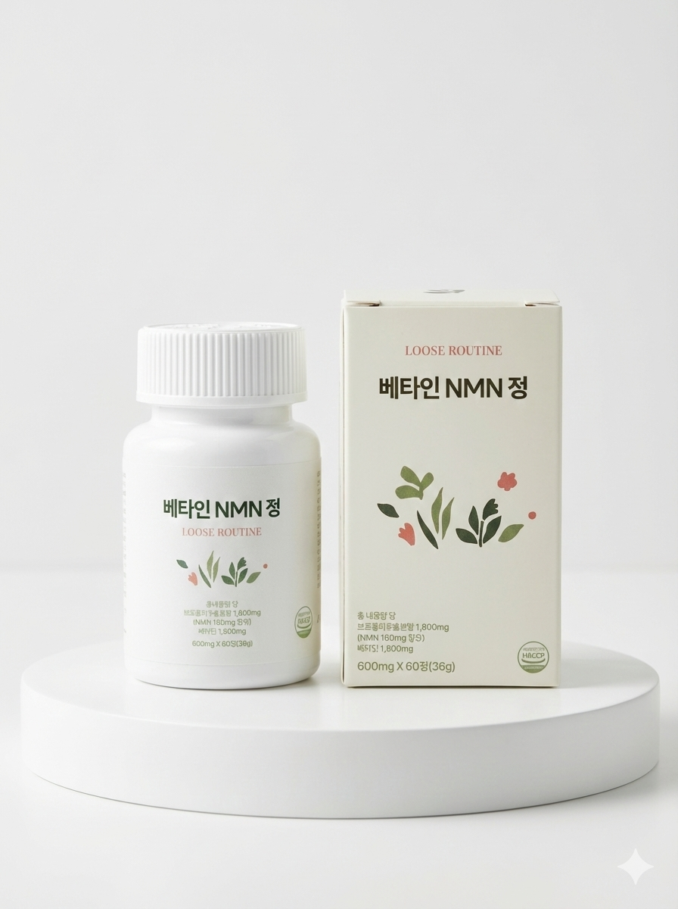

나이 드는 속도를 줄이는 게 아니라,
이미 늙어버린 세포를 젊게 되감는 거예요.

피부 탄력이 빠지고, 운동해도 회복이 느리고, 예전만큼 에너지가 없다면. 이건 단순한 피로가 아니에요. 세포 에너지 자체가 줄어드는 신호예요.

NAD+는 세포 에너지 생산, DNA 복구, 노화 억제 유전자(시르투인) 활성화를 담당해요. 나이가 들수록 이 물질이 급격히 감소해요.
NAD+가 줄면 시르투인이 작동을 멈춰요. 시르투인은 세포 수명을 연장하고 노화를 억제하는 유전자예요. NAD+를 보충하지 않으면 세포는 계속 늙어가요.
NMN(니코틴아미드 모노뉴클레오타이드)은 체내에서 NAD+로 전환되는 전구체예요. NAD+를 직접 먹는 것보다 흡수율이 높고 세포 안까지 효과적으로 전달돼요.

저속노화는 생활습관으로 노화를 늦추는 것이에요. 리버스에이징은 세포 수준에서 이미 줄어든 기능을 복구하는 거예요. NMN은 후자예요.
| 구분 | 저속노화 | 리버스에이징 (NMN) |
|---|---|---|
| 접근 방식 | 노화 속도를 늦춤 | 줄어든 기능을 복구 |
| 작용 부위 | 생활 습관, 외부 | 세포 내부, NAD+ 직접 보충 |
| 체감 변화 | 악화 방지 | 에너지, 피부, 회복력 회복 |
| 시작 시점 | 빠를수록 좋음 | NAD+ 감소 시작되는 30대부터 |


저속노화로 늦추는 것에서 한 단계 더.
리버스에이징으로 세포부터 되감아 보세요.
1일 1정. 30대부터 시작하면 달라져요.
루즈루틴 NMN 보러가기